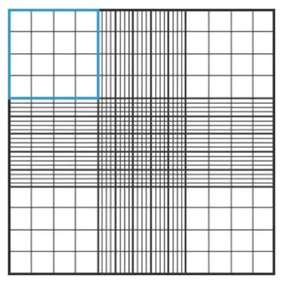
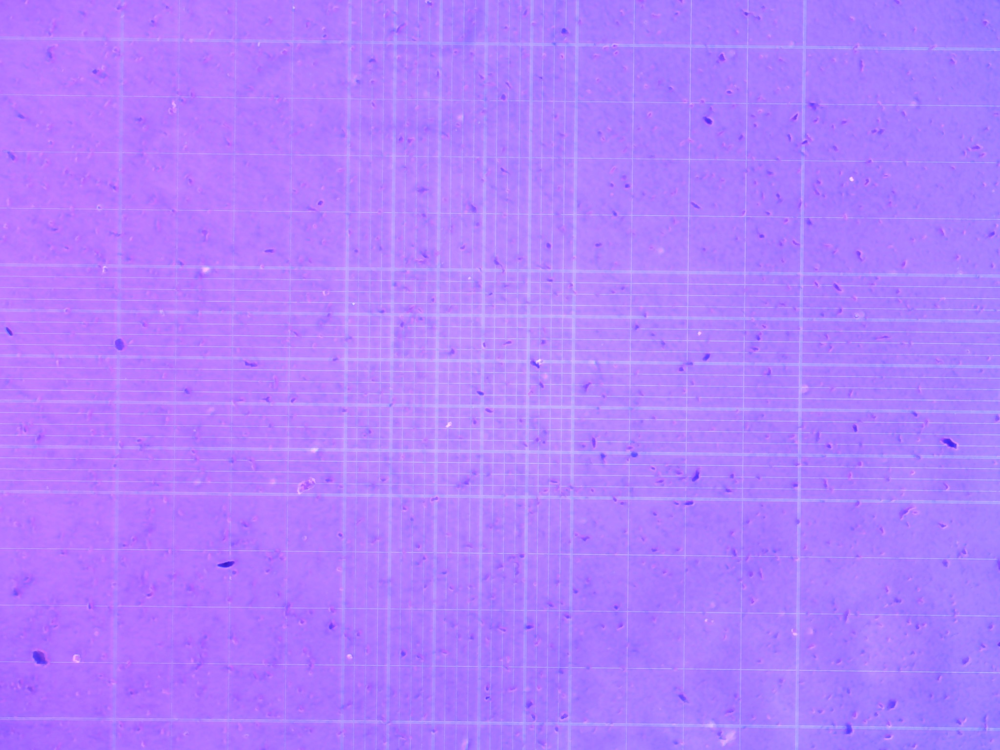
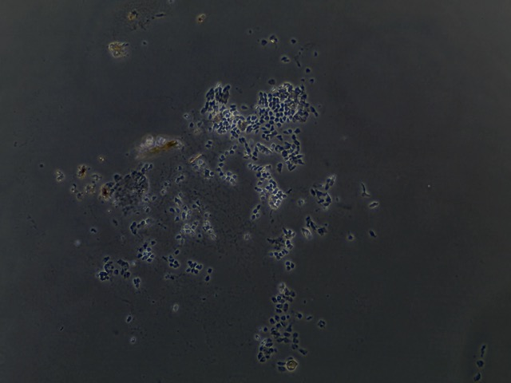
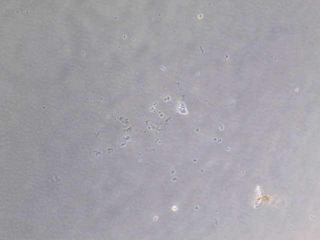
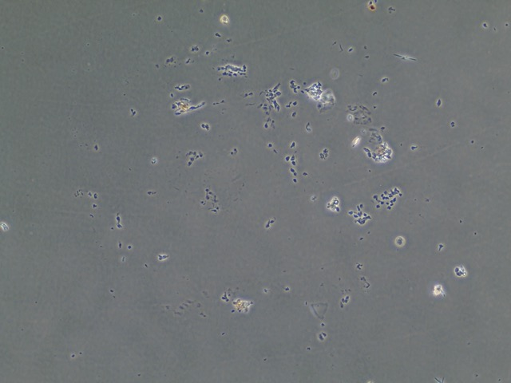
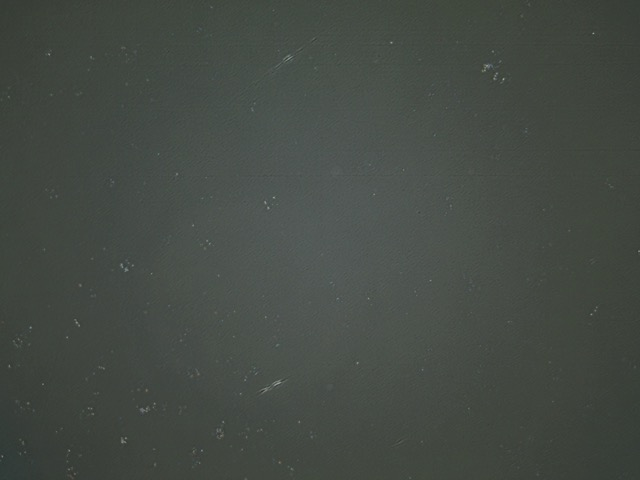

Introduction
Trypsinization of cell cultures is a common method use in cell biology to disassociate adherent cells in vitro from the vessel in which they are being cultured for the purpose of passaging the cells, meaning division of the cell population and reseeding into new vessels.
The process of cell disassociation for primary epithelial cells of Botryllus schlosseri must continue to be refined.
Protcol
Trypsinization
Examine cells to ensure they are healthy and not contaminated.
Remove and discard culture media from vessel.
Gently rinse cells with filtered PBS and remove the solution. Rinse in triplicate, 500 uL.
Add appropriate quantity of trypsin (0.5mL/10cm2) of room temperature trypsin solution to the side of the wall of the vessel. Gently swirl contents to cover the cell layer by hand.
While swirling the solution, walk over to the SCI building to use the inverted microscope. After about 2 to 3 minutes detached cells will appear round and refractile under the scope. If 90% of cells are not yet detached continue to incubate the flask for another 2 minutes and observe the cells under the scope every 30 seconds.
Do not allow cells to be exposed to the trypsin solution for extended periods (>=10 min).
Once cells appear detached add two volumes of room temperature complete tunicate culture media (TCM). The fetal bovine serum in the media will inactivate trypsin. Gently disperse the medium by pipetting over the cell layer surface at an angle several times to ensure recovery of cells.
Transfer the cell suspension to a labeled 1.5 mL tube and gently centrifuge at 100-300g for 5-10 minutes. Remove supernatent and gently resuspend cell pellet in a set volume of (1000 mL) room temperature tunicate culture media.
Remove required sample (50 uL) of cell suspension for quantification of cell density of viable cells using hemocytometer and trypan blue exclusion.
Dilute the remaining solution to the seeding density and pipet appropriate volume to new culture vessel and set in cell incubator.
Counting cells with a hemocytometer
Clean glass hemocytometer and coverslip with 70% ethanol prior to use.
Take your 50 uL sample of cells and add it to 420 uL of Trypan Blue (0.4%) (10:1 dilution) and mix gently.
Using a pipette, take about 100 uL of trypan blue-treated cell suspension and add to both sides of chambers on the hemocytometer. Fill both chambers gently underneath the coverslip and allow the cell suspension solution to be drawn out by capillary action as to not overfill the hemocytometer. Doing so could displace the estimated volume and result in inaccurate cell counts.
Use the inverted microscope to focus on the grid lines of the hemocytometer with a 10x objective.
Use a clicker to keep track of the number of unstained cells in one set of 16 outer squares. When counting, employ a system in which cells are only counted when they are within a square or on the right hand or bottom boundry line. Using the same guidelines, you may also want to count dead cells (stained dark blue) to estimate cell viability.
Move hemocytometer to the next set of 16 corner squares and continue counting all four areas of 16 corner squares.

Table for counting cells (example):
| counts | |
|---|---|
| A | 4 |
| B | 4 |
| C | 1 |
| D | 6 |
| E | 1 |
| Total | 16 |
| Average | 3.2x104 |
| Dilution | 10:1 |
| mL(x106) | 0.32x106 |
| Total Cells | 0.224x106 cells/mL |
Results









Future Directions
Based off of this initial run with trypsinizing Botryllus epithelial cells, we concluded that the cells are have a relatively low response to trypsin and further disassociation of the cells may require mechanical scraping to ensure removal of at least 90% of the epithelial layer.